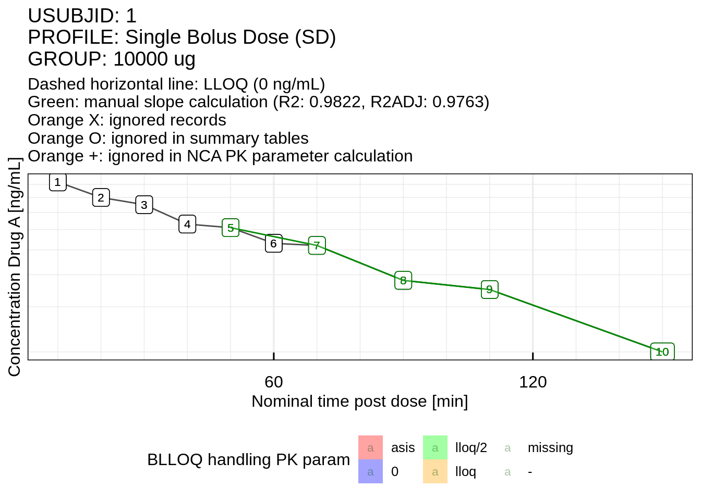

4 Examples
IQnca contains a range of examples that are included in the examples/ folder of the installed R library. The folder can be conveniently copied to another directory by the function examples_IQnca. The default path to which the example material is copied is ~/IntiQuan/IQnca. Note that the working directory is also changed to this directory.
examples_IQnca(path = "~/IntiQuan/IQnca")## IQnca documentation example material copied to: ~/IntiQuan/IQnca
## Working directory set to: ~/IntiQuan/IQnca| Folder | Subfolder | Example |
|---|---|---|
| 01_simple_linuplogdn | 01_Indo_Lin_Bolus | |
| 01_simple_linuplogdn | 02_Indo_Lin_Infusion | |
| 01_simple_linuplogdn | 03_Ind_Lin_EV_wrong | |
| 01_simple_linuplogdn | 05_Ind_Log_Bolus | |
| 01_simple_linuplogdn | 06_Ind_Log_Infusion | |
| 01_simple_linuplogdn | 07_Indo_Log_EV_wrong | |
| 01_simple_linuplogdn | 08_Theoph_Linear | |
| 01_simple_linuplogdn | 09_Theoph_Log | |
| 02_additional | 01_LinUpLogDn | 01_Extravascular |
| 02_additional | 01_LinUpLogDn | 02_Extravascular_Repeat_Dose |
| 02_additional | 01_LinUpLogDn | 03_Extravascular_Single_Dose |
| 02_additional | 01_LinUpLogDn | 04_IV_Bolus_Single_Dose |
| 02_additional | 01_LinUpLogDn | 05_IV_Inf_SD |
| 02_additional | 02_Mixed | 01_Extravascular_Single_Dose |
| 02_additional | 02_Mixed | 02_EV_SD_Interp |
| 02_additional | 03_Lin_LinInterp | 04_IV_Bolus_Single_Dose |
| 03_book_examples | Example_1 | |
| 03_book_examples | Example_2 | |
| 03_book_examples | Example_3 | |
| 03_book_examples | Example_4 | |
| 03_book_examples | Example_5 |
The following examples showcase some of the features the IQnca package has to offer. For each individual example, the data contains a different combination of administration and profile type, and also the AUC calculation method varies.
- Example 1 is an introductory analysis on bolus single dose data, demonstrating the visualization of the source data and the handling of outliers. Additional to the PK parameters calculation, the AUC on user selected intervals is calculated.
- Example 2 handles LLOQ values and manual slope selection using infusion single dose data. A final report is generated showing listings, tables and figures.
- Example 3 uses extravascular data containing both single dose and steady-state profiles. Through manual slope selection, the calculation of a slope is tried to be improved upon. A final report is generated showing listings, tables and figures.
- Example 4 compares the output PK parameters of the
IQncacalculations with those of WinNonlin, using the Theoph R data set. - Example 5 treats an edge case of the treatment of pre-dose entries.
4.1 Example 1: Bolus single dose data
This first example is a case study of an analysis with manual slope selection. The WinNonlin data set used is an IV bolus single dose data which can be found in examples/03_book_examples/Example_1/IV_Bolus_Single_Dose.xls. The data stems from a study X where the drug A was administered by IV to a group of 4 subjects. The drug was given as a 10,000 ug bolus dose. The given time unit is “Minutes”, the dosing unit is “ug” and the concentration was measured in “ng/mL”. More information about the dosing can be found in the supplied dosing data Dosing_Used.xls.
In this example the AUC is determined by using the linear trapezoidal method on increasing parts of the curve and the logarithmic trapezoidal method on decreasing parts. Additionally, the AUCs of the time intervals [0H,6H] and [0H,12H] are calculated.
4.1.1 Data preparation
As a first step, import the source data set:
# Navigate to example folder
setwd("examples/03_book_examples/Example_1/")# Load the data set
dataFile <- "IV_Bolus_Single_Dose.xls"
dataOrig <- readxl::read_excel(dataFile)The first 15 rows of this data set are shown below.
| Time | Conc | Subject | Dose |
|---|---|---|---|
| min | ug/L | NA | ug |
| 10 | 920 | 1 | 10000 |
| 20 | 800 | 1 | 10000 |
| 30 | 750 | 1 | 10000 |
| 40 | 630 | 1 | 10000 |
| 50 | 610 | 1 | 10000 |
| 60 | 530 | 1 | 10000 |
| 70 | 520 | 1 | 10000 |
| 90 | 380 | 1 | 10000 |
| 110 | 350 | 1 | 10000 |
| 150 | 200 | 1 | 10000 |
| 10 | 850 | 2 | 10000 |
| 20 | 630 | 2 | 10000 |
| 30 | 580 | 2 | 10000 |
| 40 | 1020 | 2 | 10000 |
## The first row of a WinNonlin data set often contains no relevant
## data and must therefore be removed
dataOrig <- dataOrig[-1, ]Most of the time a source data set, whether from WinNonlin or other sources, is not yet in the proper format to conduct an analysis. A preliminary step is to modify the original data set according to the IQnca specification. The names of existing relevant columns need to be mapped to column names given by the specification. Furthermore, required columns which are missing from the data set need to be added manually, provided such information exists. Table 3.1 (or calling dataSpec_IQdataNCA()) gives information on the necessary columns to build a minimally functioning example.
Columns in the original data set which do not have a counterpart in the specification may simply be ignored.
## Renaming columns of the original data set and adding additional information
data <- data.frame(
USUBJID = dataOrig$Subject,
STUDYID = "Study X",
COMPOUND = "Drug A",
ANALYTE = "Drug A",
MATRIX = "Plasma",
PROFILE = "Single Bolus Dose (SD)",
PROFTYPE = "SD",
GROUP = "10000 ug",
GROUPN = 10000,
GROUPU = "ug",
DAY = NA,
ATIME = NA,
NTIME = as.numeric(dataOrig$Time),
TIMEUNIT = "Minutes",
ACONC = as.numeric(dataOrig$Conc),
CONCUNIT = "ng/mL",
LLOQ = 0, # Faking LLOQ
ADM = "Bolus",
DOSE = as.numeric(dataOrig$Dose),
DOSEUNIT = "ug",
stringsAsFactors = FALSE
)In this example the columns ID, TIME, CONC, DOSE from the source data set were mapped to USUBJID, NTIME, ACONC, DOSE. The dosing information stems form the Dosing_Used.xls data.
| USUBJID | STUDYID | COMPOUND | ANALYTE | MATRIX | PROFILE | PROFTYPE | GROUP | GROUPN | GROUPU | DAY | ATIME | NTIME | TIMEUNIT | ACONC | CONCUNIT | LLOQ | ADM | DOSE | DOSEUNIT |
|---|---|---|---|---|---|---|---|---|---|---|---|---|---|---|---|---|---|---|---|
| 1 | Study X | Drug A | Drug A | Plasma | Single Bolus Dose (SD) | SD | 10000 ug | 10000 | ug | NA | NA | 10 | Minutes | 920 | ng/mL | 0 | Bolus | 10000 | ug |
| 1 | Study X | Drug A | Drug A | Plasma | Single Bolus Dose (SD) | SD | 10000 ug | 10000 | ug | NA | NA | 20 | Minutes | 800 | ng/mL | 0 | Bolus | 10000 | ug |
| 1 | Study X | Drug A | Drug A | Plasma | Single Bolus Dose (SD) | SD | 10000 ug | 10000 | ug | NA | NA | 30 | Minutes | 750 | ng/mL | 0 | Bolus | 10000 | ug |
| 1 | Study X | Drug A | Drug A | Plasma | Single Bolus Dose (SD) | SD | 10000 ug | 10000 | ug | NA | NA | 40 | Minutes | 630 | ng/mL | 0 | Bolus | 10000 | ug |
| 1 | Study X | Drug A | Drug A | Plasma | Single Bolus Dose (SD) | SD | 10000 ug | 10000 | ug | NA | NA | 50 | Minutes | 610 | ng/mL | 0 | Bolus | 10000 | ug |
4.1.2 Apply analysis settings
The function IQdataNCA gives the user the ability to make individual choices about the AUC calculation method, the interpolation method and the handling of records with concentration values below the lower limit of quantification. In this example the AUC on increasing parts of the concentration curve is calculated by the linear trapezoidal method, and for decreasing parts the logarithmic trapezoidal rule is used (see section 6.6). Similarly, interpolation on increasing parts is done by linear rule and on decreasing parts by logarithmic rule. By setting the parameter FLAGTIME as “nominal” the TIME data from the original data set is taken as nominal time. Furthermore, by giving a character string of intervals in the parameter AUCINVAL, the AUC on those intervals may be returned. For more detailed information about the functionality of IQdataNCA refer to Chapter 5 Data Specification.
An example of special handling of below LLOQ values is shown in Example 2.
dataNCA <- IQdataNCA(data,
FLAGTIME = "nominal",
AUCMETHD = "LinearUp LogDown",
AUCINVAL = "[0;6];[0;12]")| USUBJID | STUDYID | COMPOUND | ANALYTE | MATRIX | PROFILE | PROFTYPE | GROUP | GROUPN | GROUPU | DAY | ATIME | NTIME | TIMEUNIT | ACONC | CONCUNIT | LLOQ | ADM | DOSE | DOSEUNIT | TAU | ADUR | NDUR | VISIT | VISITNUM | PCTPT | PCDTC | EXSTDTC | PERIOD | SEQUENCE | COUNTRY | SITEID | AGE | SEX | RACE | IX | COMPTYPE | IGNOREI | IGNORER | IGNORSUM | IGNORNCA | COMMENTR | COMMENTI | ATAFD | NTAFD | FLAGTIME | FATIMIMP | TAFD | TIME | DUR | BLLOQ | BLLOQPR | BLLOQIN | BLLOQP1 | BLLOQPO | FLGBLQPR | FLGBLQIN | FLGBLQP1 | FLGBLQPO | FGBQPLIN | FGBQPLOG | CONC | CONCPLIN | CONCPLOG | FLGSLOPE | SLOPETOL | SLOPEPT | R2 | R2ADJ | LAMZNPT | LAMZ | LAMZICPT | CORRXY | LAMZLL | LAMZUL | CLSTP | AUCMETHD | AUCINVAL |
|---|---|---|---|---|---|---|---|---|---|---|---|---|---|---|---|---|---|---|---|---|---|---|---|---|---|---|---|---|---|---|---|---|---|---|---|---|---|---|---|---|---|---|---|---|---|---|---|---|---|---|---|---|---|---|---|---|---|---|---|---|---|---|---|---|---|---|---|---|---|---|---|---|---|---|---|---|---|
| 1 | Study X | Drug A | Drug A | Plasma | Single Bolus Dose (SD) | SD | 10000 ug | 10000 | ug | NA | NA | 10 | MINUTES | 920 | ng/mL | 0 | BOLUS | 10000 | ug | NA | NA | NA | NA | NA | NA | NA | NA | NA | NA | NA | NA | NA | NA | NA | 1 | exogenous | NA | NA | NA | NA | NA | NA | NA | 10 | nominal | asis | 10 | 10 | NA | 0 | 0 | 0 | 0 | 0 | 0 | missing | lloq/2 | missing | asconc | asconc | 920 | 920 | 920 | bestslope | 1e-04 | 1 | 0.9887083 | 0.9872969 | 10 | 0.0104409 | 6.918914 | -0.9943381 | 10 | 150 | 211.1941 | linearup logdown | [0;6];[0;12] |
| 1 | Study X | Drug A | Drug A | Plasma | Single Bolus Dose (SD) | SD | 10000 ug | 10000 | ug | NA | NA | 20 | MINUTES | 800 | ng/mL | 0 | BOLUS | 10000 | ug | NA | NA | NA | NA | NA | NA | NA | NA | NA | NA | NA | NA | NA | NA | NA | 2 | exogenous | NA | NA | NA | NA | NA | NA | NA | 20 | nominal | asis | 20 | 20 | NA | 0 | 0 | 0 | 0 | 0 | 0 | missing | lloq/2 | missing | asconc | asconc | 800 | 800 | 800 | bestslope | 1e-04 | 1 | 0.9887083 | 0.9872969 | 10 | 0.0104409 | 6.918914 | -0.9943381 | 10 | 150 | 211.1941 | linearup logdown | [0;6];[0;12] |
| 1 | Study X | Drug A | Drug A | Plasma | Single Bolus Dose (SD) | SD | 10000 ug | 10000 | ug | NA | NA | 30 | MINUTES | 750 | ng/mL | 0 | BOLUS | 10000 | ug | NA | NA | NA | NA | NA | NA | NA | NA | NA | NA | NA | NA | NA | NA | NA | 3 | exogenous | NA | NA | NA | NA | NA | NA | NA | 30 | nominal | asis | 30 | 30 | NA | 0 | 0 | 0 | 0 | 0 | 0 | missing | lloq/2 | missing | asconc | asconc | 750 | 750 | 750 | bestslope | 1e-04 | 1 | 0.9887083 | 0.9872969 | 10 | 0.0104409 | 6.918914 | -0.9943381 | 10 | 150 | 211.1941 | linearup logdown | [0;6];[0;12] |
| 1 | Study X | Drug A | Drug A | Plasma | Single Bolus Dose (SD) | SD | 10000 ug | 10000 | ug | NA | NA | 40 | MINUTES | 630 | ng/mL | 0 | BOLUS | 10000 | ug | NA | NA | NA | NA | NA | NA | NA | NA | NA | NA | NA | NA | NA | NA | NA | 4 | exogenous | NA | NA | NA | NA | NA | NA | NA | 40 | nominal | asis | 40 | 40 | NA | 0 | 0 | 0 | 0 | 0 | 0 | missing | lloq/2 | missing | asconc | asconc | 630 | 630 | 630 | bestslope | 1e-04 | 1 | 0.9887083 | 0.9872969 | 10 | 0.0104409 | 6.918914 | -0.9943381 | 10 | 150 | 211.1941 | linearup logdown | [0;6];[0;12] |
| 1 | Study X | Drug A | Drug A | Plasma | Single Bolus Dose (SD) | SD | 10000 ug | 10000 | ug | NA | NA | 50 | MINUTES | 610 | ng/mL | 0 | BOLUS | 10000 | ug | NA | NA | NA | NA | NA | NA | NA | NA | NA | NA | NA | NA | NA | NA | NA | 5 | exogenous | NA | NA | NA | NA | NA | NA | NA | 50 | nominal | asis | 50 | 50 | NA | 0 | 0 | 0 | 0 | 0 | 0 | missing | lloq/2 | missing | asconc | asconc | 610 | 610 | 610 | bestslope | 1e-04 | 1 | 0.9887083 | 0.9872969 | 10 | 0.0104409 | 6.918914 | -0.9943381 | 10 | 150 | 211.1941 | linearup logdown | [0;6];[0;12] |
# The summary of the data displays the profiles,
# the number of subjects and total amount of samples in the data set.
summary(dataNCA)## Profile | Number subjects | Number samples
## ---------------------------------------------------------
## Single Bolus Dose (SD) | 4 | 40Plots allow to assess potential outliers and to select points that should be considered for slope calculation (if manual selection is desired).
A first exploratory look into the data can be made by using the plot.IQdataNCA function. This plotting function is best used for data exploration; for reporting, different functions are used (see Example 2 Section 4.2.3). Individual plots show the individual profiles in different panels. The observation points are overlaid with labels, indicating the number of the sample (column IX in the IQdataNCA object). The user can choose between linear and log y axis.
plot(dataNCA, logY = TRUE, filename = "output/figures/plot_1.pdf")Individual concentration curves of each subject, with y-axis log10 scaled
4.1.2.1 Data cleaning
By the visualization of the data it is revealed that Subject 2 possesses an implausible outlier. The plot enumerates each record by the column IX which simplifies the removal of the outlier. Remove the record from NCA consideration:
dataNCA <- ignoreNCA_IQdataNCA(
dataNCA,
REASON = "Implausible value",
USUBJID = "2",
IX = 4
)
plot(dataNCA[dataNCA$USUBJID == "2", ],
logY = TRUE,
nindiv = 1,
filename = "output/figures/plot_1_subject2.pdf")Concentration curve of Subject 2, outlier removed, with y-axis log10 scaled
4.1.2.2 Manual slope selection
The terminal slope for each subject is initially calculated by the best-slope algorithm. The slope parameters are automatically included in the IQdataNCA data set.
# The slope parameters in the first row of "dataNCA", corresponding to Subject 1
dataNCA[1, c("FLGSLOPE", "SLOPEPT", "R2", "R2ADJ",
"LAMZNPT", "LAMZ", "LAMZICPT", "CORRXY",
"LAMZLL", "LAMZUL", "CLSTP")]| FLGSLOPE | SLOPETOL | SLOPEPT | R2 | R2ADJ | LAMZNPT | LAMZ | LAMZICPT | CORRXY | LAMZLL | LAMZUL | CLSTP |
|---|---|---|---|---|---|---|---|---|---|---|---|
| bestslope | 1e-04 | 1 | 0.9887083 | 0.9872969 | 10 | 0.0104409 | 6.918914 | -0.9943381 | 10 | 150 | 211.1941 |
For demonstration purposes, in this example for Subject 1 a different slope will be calculated and therefore the slope points for the first subject will be manually selected. The manual slope calculation is previewed with slopetest_IQnca.
# Terminal slope by manually choosing the records 5, 7, 8, 9 and 10 of Subject 1
slopetest_IQnca(data = dataNCA, USUBJID = "1", IXslope = c(5, 7:10))## Determining slope based on provided points in IXslope
The slope parameters with the desired slope points are then recalculated in the IQdataNCA object by the slope_IQdataNCA function.
# The slope_manual_NCA() function generates list entries.
## One list entry per subject, in this example there is only a single subject
manualslope <- list(slope_manual_NCA(USUBJID = "1", IXslope = c(5, 7:10)))
## Recalculate the slope parameters and include them in the IQdataNCA object
dataNCA <- slope_IQdataNCA(data = dataNCA, manualslope = manualslope)The new slope parameters for Subject 1:
dataNCA[1, c("FLGSLOPE", "SLOPEPT", "R2", "R2ADJ",
"LAMZNPT", "LAMZ", "LAMZICPT", "CORRXY",
"LAMZLL", "LAMZUL", "CLSTP")]| FLGSLOPE | SLOPETOL | SLOPEPT | R2 | R2ADJ | LAMZNPT | LAMZ | LAMZICPT | CORRXY | LAMZLL | LAMZUL | CLSTP |
|---|---|---|---|---|---|---|---|---|---|---|---|
| manual | 1e-04 | 0 | 0.982244 | 0.9763253 | 5 | 0.0110831 | 6.994555 | -0.9910822 | 50 | 150 | 206.8693 |
4.1.3 NCA parameter calculation
dataNCA is an IQdataNCA object which can be used for the NCA parameter calculation. It is the input for the function nca_IQdataNCA which calculates the NCA parameters.
resNCA <- nca_IQdataNCA(dataNCA)The output is an IQnca object which is a data frame containing all calculated PK parameters.
| USUBJID | STUDYID | COMPOUND | ANALYTE | MATRIX | PROFILE | PROFTYPE | GROUP | GROUPN | GROUPU | TIMEUNIT | CONCUNIT | LLOQ | ADM | DOSE | DOSEUNIT | TAU | ADUR | NDUR | PERIOD | SEQUENCE | COUNTRY | SITEID | AGE | SEX | RACE | COMPTYPE | FLAGTIME | FATIMIMP | DUR | FLGSLOPE | SLOPETOL | AUCMETHD | AUCINVAL | LAMZICPT | CORRXY | LAMZ | LAMZNPT | LAMZLL | LAMZUL | R2 | R2ADJ | LAMZHL | SPAN | TLAG | C0 | TMAX | CMAX | CMAXD | TMIN | CMIN | CMIND | TLST | CLST | CLSTP | CAVG | CTAU | FLUCP | FLUCPTAU | AILAMZ | SWING | SWINGTAU | AUCALL | AUCIFO | AUCIFOD | AUCIFP | AUCIFPD | AUCLST | AUCLSTD | AUCPBEO | AUCPBEP | AUCPEO | AUCPEP | AUCTAU | AUCTAUD | CLFO | CLFP | CLFSS | CLO | CLP | CLSS | VSSO | VSSP | VZFO | VZFP | VZFSS | VZO | VZP | VZSS | AUMCIFO | AUMCIFP | AUMCLST | AUMCPEO | AUMCPEP | AUMCTAU | AUCPTAUE | MRTEVIFO | MRTEVIFP | MRTEVLST | MRTIVIFO | MRTIVIFP | MRTIVLST | AUCINT1 | AUCINT1D | AUCINT2 | AUCINT2D |
|---|---|---|---|---|---|---|---|---|---|---|---|---|---|---|---|---|---|---|---|---|---|---|---|---|---|---|---|---|---|---|---|---|---|---|---|---|---|---|---|---|---|---|---|---|---|---|---|---|---|---|---|---|---|---|---|---|---|---|---|---|---|---|---|---|---|---|---|---|---|---|---|---|---|---|---|---|---|---|---|---|---|---|---|---|---|---|---|---|---|---|---|---|---|---|---|---|---|---|---|---|---|---|---|---|---|
| 1 | Study X | Drug A | Drug A | Plasma | Single Bolus Dose (SD) | SD | 10000 ug | 10000 | ug | MINUTES | ng/mL | 0 | BOLUS | 10000 | ug | NA | NA | NA | NA | NA | NA | NA | NA | NA | NA | exogenous | nominal | asis | NA | manual | 1e-04 | linearup logdown | [0;6];[0;12] | 6.994555 | -0.9910822 | 0.0110831 | 5 | 50 | 150 | 0.9822440 | 0.9763253 | 62.54080 | 1.598956 | NA | 1058.0000 | 10 | 920 | 0.0920 | 150 | 200 | 0.0200 | 150 | 200 | 206.86930 | NA | NA | NA | NA | NA | NA | NA | 77174.24 | 95219.70 | 9.521970 | 95839.50 | 9.583950 | 77174.24 | 7.717424 | 10.369632 | 10.302571 | 18.951394 | 19.475539 | NA | NA | NA | NA | NA | 0.1050203 | 0.1043411 | NA | 9.582734 | 9.621291 | NA | NA | NA | 9.475697 | 9.414417 | NA | 8688465 | 8837358 | 4353453 | 49.89388 | 50.73807 | NA | NA | NA | NA | NA | 91.24651 | 92.20997 | 56.41070 | 6089.124 | 0.6089124 | 11688.454 | 1.1688454 |
| 2 | Study X | Drug A | Drug A | Plasma | Single Bolus Dose (SD) | SD | 10000 ug | 10000 | ug | MINUTES | ng/mL | 0 | BOLUS | 10000 | ug | NA | NA | NA | NA | NA | NA | NA | NA | NA | NA | exogenous | nominal | asis | NA | bestslope | 1e-04 | linearup logdown | [0;6];[0;12] | 6.952288 | -0.9955550 | 0.0209562 | 9 | 10 | 150 | 0.9911298 | 0.9898626 | 33.07602 | 4.232674 | NA | 1146.8254 | 10 | 850 | 0.0850 | 150 | 42 | 0.0042 | 150 | 42 | 45.09903 | NA | NA | NA | NA | NA | NA | NA | 48500.64 | 50504.82 | 5.050482 | 50652.70 | 5.065270 | 48500.64 | 4.850064 | 19.622189 | 19.564901 | 3.968298 | 4.248664 | NA | NA | NA | NA | NA | 0.1980009 | 0.1974228 | NA | 9.361160 | 9.420541 | NA | NA | NA | 9.448328 | 9.420743 | NA | 2387785 | 2417024 | 1991521 | 16.59546 | 17.60441 | NA | NA | NA | NA | NA | 47.27837 | 47.71758 | 41.06176 | 6298.096 | 0.6298096 | 11560.235 | 1.1560235 |
| 3 | Study X | Drug A | Drug A | Plasma | Single Bolus Dose (SD) | SD | 10000 ug | 10000 | ug | MINUTES | ng/mL | 0 | BOLUS | 10000 | ug | NA | NA | NA | NA | NA | NA | NA | NA | NA | NA | exogenous | nominal | asis | NA | bestslope | 1e-04 | linearup logdown | [0;6];[0;12] | 6.877619 | -0.9984467 | 0.0189195 | 10 | 10 | 150 | 0.9968957 | 0.9965077 | 36.63672 | 3.821303 | NA | 941.1765 | 10 | 800 | 0.0800 | 150 | 60 | 0.0060 | 150 | 60 | 56.80923 | NA | NA | NA | NA | NA | NA | NA | 48126.72 | 51298.06 | 5.129806 | 51129.41 | 5.112941 | 48126.72 | 4.812672 | 16.933918 | 16.989774 | 6.182177 | 5.872720 | NA | NA | NA | NA | NA | 0.1949392 | 0.1955822 | NA | 10.371467 | 10.309132 | NA | NA | NA | 10.303629 | 10.337616 | NA | 2729242 | 2695030 | 2085918 | 23.57151 | 22.60130 | NA | NA | NA | NA | NA | 53.20361 | 52.70998 | 43.34221 | 5380.468 | 0.5380468 | 10261.047 | 1.0261047 |
| 4 | Study X | Drug A | Drug A | Plasma | Single Bolus Dose (SD) | SD | 10000 ug | 10000 | ug | MINUTES | ng/mL | 0 | BOLUS | 10000 | ug | NA | NA | NA | NA | NA | NA | NA | NA | NA | NA | exogenous | nominal | asis | NA | bestslope | 1e-04 | linearup logdown | [0;6];[0;12] | 6.207537 | -0.9971818 | 0.0096248 | 10 | 10 | 150 | 0.9943716 | 0.9936681 | 72.01703 | 1.943985 | NA | 540.5625 | 10 | 465 | 0.0465 | 150 | 120 | 0.0120 | 150 | 120 | 117.19292 | NA | NA | NA | NA | NA | NA | NA | 39568.22 | 52036.05 | 5.203605 | 51744.40 | 5.174440 | 39568.22 | 3.956822 | 9.643958 | 9.698315 | 23.959992 | 23.531400 | NA | NA | NA | NA | NA | 0.1921745 | 0.1932576 | NA | 20.028554 | 19.978403 | NA | NA | NA | 19.966660 | 20.079200 | NA | 5423233 | 5349183 | 2257667 | 58.37045 | 57.79416 | NA | NA | NA | NA | NA | 104.22069 | 103.37704 | 57.05760 | 3101.180 | 0.3101180 | 5934.471 | 0.5934471 |
Alternatively the IQnca object can displayed by calling the IQnca method print which is not shown here to avoid inflating the example.
4.2 Example 2: Infusion single dose data
The WinNonlin data set for the second example is an IV infusion single dose data which can be found in examples/03_book_examples/Example_2/IV_Infusion_Single_Dose.xls. The data stems from a study Y where the drug B was administered as a single infusion IV dose with a dosing of 300 mg/m2 to 3 subjects and 400mg/m2 to 2 subjects. More information about the dosing can be found in the supplied dosing data Dosing_Used.xls. The given time unit is “Hours”, the dosing unit is “mg” and the concentration was measured in “ug/mL”. In this example the AUC is determined by using the linear trapezoidal method on the curve before the time to Cmax (Tmax) and the logarithmic trapezoidal method for the part after Tmax. Possible interpolation is done by using the linear or logarithmic rule, on the respective parts of the curve. An alternative BLQ value handling will be applied. A report of the data and results is then generated using the following figures, listings and tables:
- Figures
- Multiple stratified spaghetti concentration plots,
- Individual plots of the concentration data,
- Mean plot of the concentration,
- Geomean plots of the concentration.
- Listings
- Concentration listing,
- Time sampling listing,
- PK parameter listing.
- Tables
- Concentration summary table,
- PK parameter summary table.
4.2.1 Data preparation
# Navigate to example folder
setwd("examples/03_book_examples/Example_2/")# Load the data set
dataFile <- "IV_Infusion_Single_Dose.xls"
dataOrig <- readxl::read_excel(dataFile)The first 15 rows of this data set are shown below.
| ID | Dose | Dose_1 | Timepoint | Actual_time | Nominal_time | Conc | BSA | Sex | Age |
|---|---|---|---|---|---|---|---|---|---|
| NA | mg_m2 | mg | NA | h | h | ug/mL | m2 | NA | NA |
| 1 | 300 | 540 | 0 HR | -1.8300000000000001 | 0 | BLQ | 1.8 | Female | 35 |
| 1 | 300 | 540 | 0.5 HR | 0.57999999999999996 | 0.5 | 17.7 | 1.8 | Female | 35 |
| 1 | 300 | 540 | Infusion End | 1.9199999999999999 | 2 | 75.4 | 1.8 | Female | 35 |
| 1 | 300 | 540 | 8 HR | 7.7999999999999998 | 8 | 64 | 1.8 | Female | 35 |
| 1 | 300 | 540 | Day 1 | 25.25 | 24 | 55.2 | 1.8 | Female | 35 |
| 1 | 300 | 540 | Day 2 | 49.079999999999998 | 48 | 49.1 | 1.8 | Female | 35 |
| 1 | 300 | 540 | Day 3 | 76.280000000000001 | 72 | 42.3 | 1.8 | Female | 35 |
| 1 | 300 | 540 | Wk 1 | 193.33000000000001 | 168 | 27.5 | 1.8 | Female | 35 |
| 1 | 300 | 540 | Day 10 | 244.41999999999999 | 240 | 27.4 | 1.8 | Female | 35 |
| 1 | 300 | 540 | Wk 2 | 358.10000000000002 | 336 | 21.3 | 1.8 | Female | 35 |
| 1 | 300 | 540 | Wk 4 | 699.04999999999995 | 672 | 10.3 | 1.8 | Female | 35 |
| 1 | 300 | 540 | 0 HR | 1055.4200000000001 | 1008 | 7.1 | 1.8 | Female | 35 |
| 2 | 300 | 660 | 0 HR | -2.1200000000000001 | 0 | BLQ | 2.2000000000000002 | Male | 41 |
| 2 | 300 | 660 | 0.5 HR | 0.55000000000000004 | 0.5 | 33.3 | 2.2000000000000002 | Male | 41 |
## The first row of a WinNonlin data set often contains no relevant
## data and must therefore be removed
dataOrig <- dataOrig[-1,]Note the fact that the rows with concentrations below the LLOQ hold the non-numeric entry “BLQ” in the “Conc” column. This is a characteristic of WinNonlin data sets which needs to be modified before using the IQdataNCA function since the concentration columns (ACONC) may only be numeric. In cases like this it is important to replace the strings by values smaller than the LLOQ (here the LLOQ is 5).
Augment the original data set according to the IQnca specification:
data <- data.frame(
USUBJID = dataOrig$ID,
STUDYID = "Study Y",
COMPOUND = "Drug B",
ANALYTE = "Drug B",
MATRIX = "Plasma",
PROFILE = "Single IV Infusion Dose (SD)",
PROFTYPE = "SD",
GROUP = paste0(dataOrig$Dose, "mg/m2"),
GROUPN = as.numeric(dataOrig$Dose),
GROUPU = "mg/m2",
DAY = NA,
ATIME = as.numeric(dataOrig$Actual_time),
NTIME = as.numeric(dataOrig$Nominal_time),
TIMEUNIT = "Hours",
# Here the replacement of BLQ values by a value smaller than the LLOQ
ACONC = {
x <- dataOrig$Conc
x[grepl("BLQ", x)] <- 0
as.numeric(x)
},
CONCUNIT = "ug/mL",
LLOQ = 5,
ADM = "Infusion",
DOSE = as.numeric(dataOrig$Dose_1),
DOSEUNIT = "mg",
NDUR = 2,
ADUR = NA,
SEX = dataOrig$Sex,
AGE = dataOrig$Age,
stringsAsFactors = FALSE
)
# Rounding the small deviation
# (Rounding is not necessary but improves the presentation)
data[, c("ATIME", "ACONC")] <- round(data[, c("ATIME", "ACONC")], digits = 2)# Also add manually the actual duration of the infusion
# which is not included in the data set
# (see the "Dosing_Used.xls" data set in the same folder)
data$ADUR[data$USUBJID == 1] <- 1.83
data$ADUR[data$USUBJID == 2] <- 2.17
data$ADUR[data$USUBJID == 3] <- 2.07
data$ADUR[data$USUBJID == 4] <- 2.67
data$ADUR[data$USUBJID == 5] <- 3.67
data$ADUR[data$USUBJID == 6] <- 2.5| USUBJID | STUDYID | COMPOUND | ANALYTE | MATRIX | PROFILE | PROFTYPE | GROUP | GROUPN | GROUPU | DAY | ATIME | NTIME | TIMEUNIT | ACONC | CONCUNIT | LLOQ | ADM | DOSE | DOSEUNIT | NDUR | ADUR | SEX | AGE |
|---|---|---|---|---|---|---|---|---|---|---|---|---|---|---|---|---|---|---|---|---|---|---|---|
| 1 | Study Y | Drug B | Drug B | Plasma | Single IV Infusion Dose (SD) | SD | 300mg/m2 | 300 | mg/m2 | NA | -1.83 | 0.0 | Hours | 0.0 | ug/mL | 5 | Infusion | 540 | mg | 2 | 1.83 | Female | 35 |
| 1 | Study Y | Drug B | Drug B | Plasma | Single IV Infusion Dose (SD) | SD | 300mg/m2 | 300 | mg/m2 | NA | 0.58 | 0.5 | Hours | 17.7 | ug/mL | 5 | Infusion | 540 | mg | 2 | 1.83 | Female | 35 |
| 1 | Study Y | Drug B | Drug B | Plasma | Single IV Infusion Dose (SD) | SD | 300mg/m2 | 300 | mg/m2 | NA | 1.92 | 2.0 | Hours | 75.4 | ug/mL | 5 | Infusion | 540 | mg | 2 | 1.83 | Female | 35 |
| 1 | Study Y | Drug B | Drug B | Plasma | Single IV Infusion Dose (SD) | SD | 300mg/m2 | 300 | mg/m2 | NA | 7.80 | 8.0 | Hours | 64.0 | ug/mL | 5 | Infusion | 540 | mg | 2 | 1.83 | Female | 35 |
| 1 | Study Y | Drug B | Drug B | Plasma | Single IV Infusion Dose (SD) | SD | 300mg/m2 | 300 | mg/m2 | NA | 25.25 | 24.0 | Hours | 55.2 | ug/mL | 5 | Infusion | 540 | mg | 2 | 1.83 | Female | 35 |
4.2.2 BLQ data handling
The IQdataNCA function provides multiple options for handling LLOQ data. In this example, BLQ values before the first time above the LLOQ are set to LLOQ/2, BLQ values in the middle are left as is, and trailing BLQ values are set to zero. Of note, the LLOQ in this example is 5 ug/mL.
dataNCA <- IQdataNCA(data,
FLAGTIME = "nominal",
AUCMETHD = "Linear Log",
FLGBLQPR = "LLOQ/2",
FLGBLQIN = "asis",
FLGBLQP1 = "0",
FLGBLQPO = "0")plot(dataNCA, logY = FALSE, filename = "output/figures/plot_1.pdf")Individual concentration curves of each subject
4.2.3 Data listings and tables
The data is reported in comprehensive listings, the concentration statistics are consolidated in a summary table. A concentration listing, a time listing and a concentration summary table will be generated. For a complete list of table and listing functions, refer to Table 3.4.
Generate the listings of the concentrations.
listing_conc_IQdataNCA(data = dataNCA,listingnumber = "2.1",
filename = "output/listings/listing_concentrations")## Generating PK concentration listings ...Shown below is only the first profile group:
#* Listing 2.1 Individual concentration data
!BLOCKSTART[keepNext](indiv2_1)
**Listing 2.1-1 Individual concentration data of Plasma Drug B (Drug B) - Single IV Infusion Dose (SD) (1 of 2)**
!TABINLINE[size:8,ignoreCaption:true,valueTable:false]
| | | Nominal Time [h] | | | | | | | | | |
| ------------- | ----------- | ------------------------- | ---- | ----- | ---- | ---- | ---- | ---- | ---- | ---- | ---- |
| | | 0 | 0.5 | 2 | 8 | 24 | 48 | 72 | 168 | 240 | 336 |
| **Treatment** | **Subject** | **Concentration [ug/mL]** | | | | | | | | | |
| 300mg/m2 | 1 | BLQ | 17.7 | 75.4 | 64 | 55.2 | 49.1 | 42.3 | 27.5 | 27.4 | 21.3 |
| | 2 | BLQ | 33.3 | 157.2 | 97.7 | 94.3 | 91.7 | 80 | 62.1 | 52.8 | 42.8 |
| | 3 | BLQ | 26.2 | 92.3 | 94.9 | 79.1 | 63.7 | 62.6 | 57.3 | 38.6 | 37.4 |
{NS: No Sample.<br>BLQ: Below lower limit of quantitation.<br>Lower limit of quantitation is 5 ug/mL.<br>IQnca version: 1.2.0<br>Script: compliance<br>Output: output/listings/listing_concentrations.rmd<br>Execution date: 2022-06-22 14:22:28}
!BLOCKEND(indiv2_1)
!NEWPAGE
!BLOCKSTART[keepNext](indiv2_1)
**Listing 2.1-1 Individual concentration data of Plasma Drug B (Drug B) - Single IV Infusion Dose (SD) (2 of 2)**
!TABINLINE[size:8,ignoreCaption:true,valueTable:false]
| | | Nominal Time [h] | |
| ------------- | ----------- | ------------------------- | ---- |
| | | 672 | 1008 |
| **Treatment** | **Subject** | **Concentration [ug/mL]** | |
| 300mg/m2 | 1 | 10.3 | 7.1 |
| | 2 | 24.5 | 12.7 |
| | 3 | 20.1 | 8.6 |
{NS: No Sample.<br>BLQ: Below lower limit of quantitation.<br>Lower limit of quantitation is 5 ug/mL.<br>IQnca version: 1.2.0<br>Script: compliance<br>Output: output/listings/listing_concentrations.rmd<br>Execution date: 2022-06-22 14:22:28}View the full concentration listing
The listings of the time data:
listing_time_IQdataNCA(data = dataNCA,listingnumber = "2.2",
filename = "output/listings/listing_times")## Generating PK sampling time listings ...View the full time data listing
Generate also the table of the concentration summary statistics.
table_summary_conc_IQdataNCA(data = dataNCA,tablenumber = "2.1",
filename = "output/tables/summary_table_conc")## Generating PK concentration summary tables ...| | | Nominal Time [h] | | | | | | | | | |
| ------------- | ------------ | ------------------------- | ----- | ----- | ----- | ----- | ----- | ----- | ----- | ----- | ----- |
| | | 0 | 0.5 | 2 | 8 | 24 | 48 | 72 | 168 | 240 | 336 |
| **Treatment** | **Stats** | **Concentration [ug/mL]** | | | | | | | | | |
| 300mg/m2 | N | 3 | 3 | 3 | 3 | 3 | 3 | 3 | 3 | 3 | 3 |
| | Mean | 2.5 | 25.73 | 108.3 | 85.53 | 76.2 | 68.17 | 61.63 | 48.97 | 39.6 | 33.83 |
| | SD | 0 | 7.81 | 43.18 | 18.7 | 19.71 | 21.65 | 18.87 | 18.74 | 12.73 | 11.18 |
| | Min | 2.5 | 17.7 | 75.4 | 64 | 55.2 | 49.1 | 42.3 | 27.5 | 27.4 | 21.3 |
| | Median | 2.5 | 26.2 | 92.3 | 94.9 | 79.1 | 63.7 | 62.6 | 57.3 | 38.6 | 37.4 |
| | Geo-mean | 2.5 | 24.9 | 103 | 84.03 | 74.39 | 65.95 | 59.61 | 46.08 | 38.22 | 32.43 |
| | Max | 2.5 | 33.3 | 157.2 | 97.7 | 94.3 | 91.7 | 80 | 62.1 | 52.8 | 42.8 |
| | CV% mean | 0 | 30.35 | 39.87 | 21.86 | 25.87 | 31.76 | 30.61 | 38.28 | 32.15 | 33.06 |
| | CV% geo-mean | 0 | 32.73 | 39.36 | 23.96 | 27.81 | 32.17 | 32.99 | 47.25 | 33.71 | 38.32 |
{NC: Not calculated.<br>Geo-mean: Geometric mean.<br>CV%% mean = coefficient of variation (%%)=SD/mean * 100.<br>CV%% geo-mean=(sqrt (exp (variance for log transformed data)-1)) * 100.<br>Lower limit of quantitation: 5 ug/mL. Pre-first dose <LLOQ values were handled as: LLOQ/2. <LLOQ values between >=LLOQ values were handled as: asis. First <LLOQ value post last >= LLOQ was handled as: 0. Second to last First <LLOQ value post last >= LLOQ was handled as: 0.<br>Values in table are reported with 4 significant digits.<br>IQnca version: 1.2.0<br>Script: compliance<br>Output: output/tables/summary_table_conc.rmd<br>Execution date: 2022-06-22 14:22:28}4.2.4 Data plots
For the final report, figures of the data and summary statistics are generated. While the plot.IQdataNCA function is useful for data exploration, for reporting more sophisticated plotting functions are being used. The figures are exported into PDF files and also into .Rmd code is generated which is used for the final report. For a complete list of plotting functions, see Table 3.4.
4.2.4.1 Summary level plots
Summary level plots show the data in the same plots. Both on linear and log Y axis and both untransformed and dose-normalized. For each GROUP and PROFILE, a separate plot is created. In this example there are two dosing groups and a single profile. Stratification by various columns of the data is expressed by the coloring of the curves. In the following example the spaghetti plot is stratified by USUBJID.
## Create and save a spaghetti plot as pdf, log10 scaled y-axis, stratified by USUBJID (default)
figure_spaghetti_IQdataNCA(dataNCA, logY = TRUE, strat = "USUBJID",
filename = "output/figures/spaghetti_1.pdf")
The horizontal dashed line in the figure above marks the LLOQ.
Below an example with stratification by SEX, linear scale y-axis and dose-normalized concentration.
## Create and save a spaghetti plot as pdf, stratified by SEX, dose-normalized
figure_spaghetti_dosenorm_IQdataNCA(dataNCA, logY = FALSE, strat = "SEX",
filename = "output/figures/spaghetti_2.pdf")Spaghetti plot of the concentration data, stratified by SEX, dose-normalized
The stratified columns can contain categorical or continuous data, but the latter is only recommended if there is a small finite number of unique values in the column. An example of a spaghetti plot, stratified by the continuous column AGE:
## Create and save a spaghetti plot as pdf, stratified by SEX, dose-normalized
figure_spaghetti_dosenorm_IQdataNCA(dataNCA, logY = FALSE, strat = "AGE",
filename = "output/figures/spaghetti_3.pdf")Spaghetti plot of the concentration data, stratified by AGE, dose-normalized
4.2.4.2 Individual plots
Individual plots show the individual profiles in different panels. Plots are produced both on a linear and log Y axis.
## Create and save individual plots as pdf, log10 scaled y-axis
figures_indiv_IQdataNCA(dataNCA, logY = TRUE, nindiv = 4,
filename = "output/figures/indiv_1.pdf")Individual concentration curves of each subject, with y-axis log10 scaled
4.2.4.3 Mean plots
Mean plots show binned mean and geometric mean plots with and without standard errors on linear and log Y axis. For each group, defined by a different entry in the GROUP column, a line is plotted. Below, both mean and geometric mean plots are shown.
## A mean plot of the concentration
figure_summary_mean_IQdataNCA(dataNCA, logY = FALSE, USETAD = FALSE,
filename = "output/figures/figure_mean_1.pdf")Mean plot of the concentration data, with upper standard deviation
## A geometric mean plot of the concentration.
figure_summary_geomean_IQdataNCA(dataNCA, logY = FALSE,
filename = "output/figures/figure_geommean_1.pdf")Geometric mean plot of the concentration data, with upper geometric standard deviation
## A geometric mean plot of the concentration with log10 scaled y-axis
figure_summary_geomean_IQdataNCA(dataNCA, logY = TRUE,
filename = "output/figures/figure_geommean_2.pdf")Geometric mean plot of the concentration data, with log10 scaled y-axis, with upper geometric standard deviation
4.2.5 NCA parameter calculation
The PK parameters calculation.
resNCA <- nca_IQdataNCA(dataNCA)# Export results as txt and csv file
export_IQnca(data = resNCA, SIGNIF = 6, TXT = TRUE, CSV = TRUE,
parameterReport = "all", filename = "NCA_results")## Exporting NCA results ...4.2.6 Result listings and tables
Export the resulting PK parameters as listings and tables. For a complete overview over the possible PK listing and table functions, see Table 3.5.
listing_pkparameter_IQnca(data = resNCA, listingnumber = "2.3",
filename = "output/listings/listing_pkparameter")## Generating PK parameter listings ...The PK parameter listing of the first subject:
**Listing 2.3-1 Individual pharmacokinetic parameters of Plasma Drug B (Drug B)**
* USUBJID: 1
* Age: 35
* Gender: Female
!TABINLINE[size:8,ignoreCaption:true,valueTable:false]
| Profile | Group | Dose [mg] | Description | Parameter (Unit) | Value |
| ---------------------------- | -------- | --------- | ------------------------------------- | ------------------- | ---------- |
| Single IV Infusion Dose (SD) | 300mg/m2 | 540 | Number of Points for Lambda z | LAMZNPT (-) | 5 |
| | | | R Squared Adjusted | R2ADJ (-) | 0.970477 |
| | | | Half-Life Lambda z | LAMZHL (h) | 398.976 |
| | | | Span | SPAN (-) | 2.10539 |
| | | | Time of CMAX | TMAX (h) | 2 |
| | | | Max Conc | CMAX (mg/L) | 75.4 |
| | | | Max Conc Norm by Dose | CMAXD (mg/L/mg) | 0.13963 |
| | | | Time of CMIN Observation | TMIN (h) | 0 |
| | | | Min Conc | CMIN (mg/L) | 2.5 |
| | | | Min Conc Norm by Dose | CMIND (mg/L/mg) | 0.00462963 |
| | | | Time of Last Nonzero Conc | TLST (h) | 1008 |
| | | | Last Nonzero Conc | CLST (mg/L) | 7.1 |
| | | | Last Nonzero Conc Pred | CLSTP (mg/L) | 6.59407 |
| | | | AUC All | AUCALL (mg/L*h) | 19367.2 |
| | | | AUC Infinity Obs | AUCIFO (mg/L*h) | 23453.9 |
| | | | AUC Infinity Obs Norm by Dose | AUCIFOD (mg/L*h/mg) | 43.4332 |
| | | | AUC Infinity Pred | AUCIFP (mg/L*h) | 23162.7 |
| | | | AUC Infinity Pred Norm by Dose | AUCIFPD (mg/L*h/mg) | 42.8939 |
| | | | AUC to Last Nonzero Conc | AUCLST (mg/L*h) | 19367.2 |
| | | | AUC to Last Nonzero Conc Norm by Dose | AUCLSTD (mg/L*h/mg) | 35.8651 |
| | | | AUC %Extrapolation Obs | AUCPEO (%) | 17.4247 |
| | | | AUC %Extrapolation Pred | AUCPEP (%) | 16.3865 |
| | | | Total CL Obs | CLO (L/h) | 0.0230239 |
| | | | Total CL Pred | CLP (L/h) | 0.0233133 |
| | | | Vol Dist Steady State Obs | VSSO (L) | 12.6509 |
| | | | Vol Dist Steady State Pred | VSSP (L) | 12.5071 |
| | | | Vz Obs | VZO (L) | 13.2526 |
| | | | Vz Pred | VZP (L) | 13.4192 |
{NC: Not calculated.<br>Number of significant digits: 6<br>IQnca version: 1.2.0<br>Script: compliance<br>Output: output/listings/listing_pkparameter.rmd<br>Execution date: 2022-06-22 14:22:32}View the full PK parameters listing
table_summary_byGROUP_pkparameters_IQnca(
data = resNCA,
tablenumber = "2.2",
strat = "SEX",
filename = "output/tables/table_bygroup_PKparam"
) ## Generating PK parameter summary tables ...4.2.7 Reporting
In the final report, the previously exported figures, listings and tables are consolidated in a single Word document. The list of export functions used for the creation of figures, lists and tables in this example is by no means exhaustive.
# Define reporting information
result_paths <- c("output/listings",
"output/figures",
"output/tables")
reportfile <- "output/report/Report_NCA_IV_SD.rmd"
templatestyle <- "DefaultStyle.rmdt"
title <- "NCA of PK profile after single dose"
# Generate the report
report_IQnca(reportfile = reportfile,
resultpaths = result_paths,
templatestyle = templatestyle,
title = title,
docx = TRUE)4.3 Example 3: Extravascular first dose and steady state
The PK of the drug candidate C under repeated dosing was investigated in a single-arm study Z. A 10 mg dose of C was given once daily for one week to 10 healthy individuals. PK profiles in plasma were monitored on Day 1 and after the last dose on Day 7. For Day 1, the profile was obtained for the dosing interval whereas the Day 7 profile monitored the washout up to one week after the last dose.
To investigate and compare the PK characteristics after first dose and at the assumed steady-state, an NCA is conducted for both profiles. The AUC is to be calculated based on linear trapezoidal rule before the maximum concentration and based on logarithmic trapezoidal rule afterwards. The standard settings for BLQ handling are applied.
4.3.1 Data exploration
The PK data is provided in the IQncaData input format, i.e., all required columns for importing the data as IQRdataNCA are prepared.
# Navigate to example folder
setwd("examples/03_book_examples/Example_3/")# Load input data set prepared for IQdataNCA import
dataInput <- IQRloadCSVdata("EV_Steady_State_First_Dose.csv")
head_tbl <- formatData(head(dataInput, n = 5), title = "First five rows of the minimally required data set")
head_tbl <- kableExtra::scroll_box(head_tbl, width = "100%")
head_tbl| USUBJID | STUDYID | COMPOUND | ANALYTE | MATRIX | PROFILE | PROFTYPE | GROUP | GROUPN | GROUPU | DAY | ATIME | NTIME | TIMEUNIT | ACONC | CONCUNIT | LLOQ | ADM | DOSE | DOSEUNIT | TAU |
|---|---|---|---|---|---|---|---|---|---|---|---|---|---|---|---|---|---|---|---|---|
| 1 | Z | C | C | Plasma | First dose | FD | 10mg_OD_Oral | 10 | mg | 1 | 0.0000 | 0.0000 | Hours | 0.3689 | ng/mL | 1 | EXTRAVASCULAR | 10 | mg | 24 |
| 1 | Z | C | C | Plasma | First dose | FD | 10mg_OD_Oral | 10 | mg | 1 | 0.1667 | 0.1667 | Hours | 24.2235 | ng/mL | 1 | EXTRAVASCULAR | 10 | mg | 24 |
| 1 | Z | C | C | Plasma | First dose | FD | 10mg_OD_Oral | 10 | mg | 1 | 1.0000 | 1.0000 | Hours | 74.1386 | ng/mL | 1 | EXTRAVASCULAR | 10 | mg | 24 |
| 1 | Z | C | C | Plasma | First dose | FD | 10mg_OD_Oral | 10 | mg | 1 | 2.0000 | 2.0000 | Hours | 134.2214 | ng/mL | 1 | EXTRAVASCULAR | 10 | mg | 24 |
| 1 | Z | C | C | Plasma | First dose | FD | 10mg_OD_Oral | 10 | mg | 1 | 4.0000 | 4.0000 | Hours | 131.8492 | ng/mL | 1 | EXTRAVASCULAR | 10 | mg | 24 |
Such, the input dataset can readily be imported by IQdataNCA for analysis preparation, i.e., defining the analysis setting in the data set. The summary function provides an overview over the number of subjects and observations for each profile. Here, the numbers reported are as expected.
# Import the data as IQdataNCA and implement default settings for the analysis
dataNCA <- IQdataNCA(dataInput, AUCMETHD = "Linear Log")
# Summary of dataNCA to display number of subjects and sampled per profile
summary(dataNCA) Profile | Number subjects | Number samples
----------------------------------------------------
First dose | 10 | 90
Steady-state dose | 10 | 120 The exploratory plots show the individual profiles. No obvious outlier is visible, but for subject 1 the slope for the steady-state profile with washout could not be determined precisely.
plot(dataNCA, filename = "output/01_EDA.pdf")## Warning: Transformation introduced infinite values in continuous y-axis
## Warning: Transformation introduced infinite values in continuous y-axis
## Warning: Transformation introduced infinite values in continuous y-axis
## Warning: Transformation introduced infinite values in continuous y-axis
## Warning: Transformation introduced infinite values in continuous y-axis
## Warning: Transformation introduced infinite values in continuous y-axis
## Warning: Transformation introduced infinite values in continuous y-axis
## Warning: Transformation introduced infinite values in continuous y-axis
## Warning: Transformation introduced infinite values in continuous y-axis
## Warning: Transformation introduced infinite values in continuous y-axis
## Warning: Transformation introduced infinite values in continuous y-axis
## Warning: Transformation introduced infinite values in continuous y-axis
## Warning: Transformation introduced infinite values in continuous y-axis
## Warning: Transformation introduced infinite values in continuous y-axis
## Warning: Transformation introduced infinite values in continuous y-axis
## Warning: Transformation introduced infinite values in continuous y-axis
## Warning: Transformation introduced infinite values in continuous y-axis
## Warning: Transformation introduced infinite values in continuous y-axis
## Warning: Transformation introduced infinite values in continuous y-axis
## Warning: Transformation introduced infinite values in continuous y-axis
## Warning: Transformation introduced infinite values in continuous y-axis
## Warning: Transformation introduced infinite values in continuous y-axis
## Warning: Transformation introduced infinite values in continuous y-axis
## Warning: Transformation introduced infinite values in continuous y-axis
## Warning: Transformation introduced infinite values in continuous y-axis
## Warning: Transformation introduced infinite values in continuous y-axis
## Warning: Transformation introduced infinite values in continuous y-axis
## Warning: Transformation introduced infinite values in continuous y-axis
## Warning: Transformation introduced infinite values in continuous y-axis
## Warning: Transformation introduced infinite values in continuous y-axis
## Warning: Transformation introduced infinite values in continuous y-axis
## Warning: Transformation introduced infinite values in continuous y-axis
## Warning: Transformation introduced infinite values in continuous y-axis
## Warning: Transformation introduced infinite values in continuous y-axis
## Warning: Transformation introduced infinite values in continuous y-axis
## Warning: Transformation introduced infinite values in continuous y-axis
## Warning: Transformation introduced infinite values in continuous y-axis
## Warning: Transformation introduced infinite values in continuous y-axis
## Warning: Transformation introduced infinite values in continuous y-axis
## Warning: Transformation introduced infinite values in continuous y-axisExploratory data plots
# Run manually slopes with different starting points included in the slope calculation
p <- lapply(7:10, function(kstart) {
slopetest_IQnca(dataNCA, USUBJID = "1", PROFILE = "Steady-state dose",
IXslope = kstart:12)
})## Determining slope based on provided points in IXslope
## Determining slope based on provided points in IXslope
## Determining slope based on provided points in IXslope
## Determining slope based on provided points in IXslope# Inspect the results visually in a pdf file
IQRoutputPDF(p, filename = "output/02_ManualSlopeTesting.pdf", nrow = 1, ncol = 2) Checking slope for steady-state profile of subject 1
As the exploratory data analysis indicates that there are no outliers to be removed and the slope calculation cannot be improved via manual tuning, the NCA is conducted without further modifications of the dataset or settings.
4.3.2 NCA parameter calculation
The PK parameters are calculated and exported as both .txt and .csv files.
# Perform NCA
resNCA <- nca_IQdataNCA(dataNCA)# Save results for later use as txt and csv file
export_IQnca(data = resNCA,
filename = "output/results/nca_parameters",
SIGNIF = 6,
TXT = TRUE,
CSV = TRUE,
parameterReport = "all")## Exporting NCA results ...# Export results as ADPP data
# exportCDISC_IQnca(data = resNCA,
# pathname = "output/results/",
# SIGNIF = 6,
# parameterReport = "all")4.3.3 Reporting
For reporting of the PK parameters, listings and tables can be created. For a complete of list of possible PK listings and tables, see Table 3.5.
Below the detailed report of all PK parameters.
# Listing of individual parameters
listing_pkparameter_IQnca(data = resNCA,
filename = "output/listings/01_listings_NCA")## Generating PK parameter listings ...Also generate a table with the summary statistics of all PK parameters.
# Summarise all parameters
table_summary_byGROUP_pkparameters_IQnca(
data = resNCA,
filename = "output/tables/01_SummaryAll_NCA"
)## Generating PK parameter summary tables ...If desired, the table can be generated for only select PK parameters:
# Summarize selected parameters
table_summary_byGROUP_pkparameters_IQnca(
data = resNCA,
parameterReport = c("TMAX", "CMAX", "AUCTAU", "LAMZ", "R2ADJ"),
filename = "output/tables/02_SummaryKey_NCA")## Generating PK parameter summary tables ...View the full key parameter summary
result_paths <- c("output/tables","output/listings")
reportfile <- "output/report/Report_NCA_EV_FD-SS.rmd"
templatestyle <- "DefaultStyle.rmdt"
title <- "NCA of PK profiles after first dose and at steady state"
report_IQnca(reportfile = reportfile, resultpaths = result_paths,
templatestyle = templatestyle, title = title)4.4 Example 4: Single oral dose data
This example calculates the NCA parameters of the Theoph dataset and compares the parameters calculated in WinNonlin with the results of IQnca. The WinNonlin calculated data can be found in FPP_Theoph_Log.csv. The data stems from the Theoph R data set where the drug theophylline was administered orally to a group of 12 subjects. The drug was given as a 320 mg single dose. The given time unit is “Hours”, the dosing unit is “mg” and the concentration was measured in “ug/mL”.
4.4.1 NCA parameter calculation
Import the data, augment it via IQdataNCA and calculate the NCA parameters.
# Navigate to example folder
setwd("examples/03_book_examples/Example_4/")# Load input data set and adjust for IQnca specifications
data <- as.data.frame(Theoph)
data$Subject <- as.numeric(as.character(data$Subject))
names(data) <- c("USUBJID","WT0","DOSE","ATIME","ACONC")
data$DOSE <- 320
data$STUDYID <- "Theop R dataset"
data$COMPOUND <- "Theop"
data$ANALYTE <- "Theop"
data$MATRIX <- "Plasma"
data$PROFILE <- "SD profile"
data$PROFTYPE <- "SD"
data$GROUP <- "320 mg SD"
data$GROUPN <- "320"
data$GROUPU <- "mg"
data$DAY <- 1
data$NTIME <- NA
data$TIMEUNIT <- "Hours"
data$CONCUNIT <- "ug/mL"
data$LLOQ <- 0
data$ADM <- "Extravascular"
data$DOSEUNIT <- "mg"
data$TAU <- 24
# Derive NTIME
data$NTIME[data$ATIME == 0] <- 0
data$NTIME[data$ATIME > 0 & data$ATIME <= 0.4] <- 0.25
data$NTIME[data$ATIME > 0.4 & data$ATIME <= 0.7] <- 0.5
data$NTIME[data$ATIME > 0.7 & data$ATIME <= 1.5] <- 1
data$NTIME[data$ATIME > 1.5 & data$ATIME <= 2.5] <- 2
data$NTIME[data$ATIME > 2.5 & data$ATIME <= 3.5] <- 3
data$NTIME[data$ATIME > 3.5 & data$ATIME <= 5.5] <- 5
data$NTIME[data$ATIME > 5.5 & data$ATIME <= 7.5] <- 7
data$NTIME[data$ATIME > 7.5 & data$ATIME <= 9.5] <- 9
data$NTIME[data$ATIME > 9.5 & data$ATIME <= 14] <- 12
data$NTIME[data$ATIME > 14 & data$ATIME <= Inf] <- 24
The actual time column is used to calculate the parameters. For comparisons with other NCA tools it is recommended to set the option FLAGignore to FALSE.
dataNCA <- IQdataNCA(data,
FLAGTIME = "actual",
AUCMETHD = "LinearUp LogDown",
FLAGignore = FALSE)resNCA <- nca_IQdataNCA(dataNCA)4.4.2 Comparison of results
Compare the NCA parameter calculations of WinNonlin and IQnca on the Theoph data. The WinNonlin results are found in FPP_Theoph_Log.csv.
# Import the Winnonlin results
wnl_results <- IQRloadCSVdata("FPP_Theoph_Log.csv")| Subject | Rsq | Rsq_adjusted | Corr_XY | No_points_lambda_z | Lambda_z | Lambda_z_lower | Lambda_z_upper | HL_Lambda_z | Tlag | Tmax | Cmax | Cmax_D | Tlast | Clast | AUClast | AUCall | AUCINF_obs | AUCINF_D_obs | AUC_%Extrap_obs | Vz_F_obs | Cl_F_obs | AUCINF_pred | AUCINF_D_pred | AUC_%Extrap_pred | Vz_F_pred | Cl_F_pred | AUMClast | AUMCINF_obs | AUMC_%Extrap_obs | AUMCINF_pred | AUMC_%Extrap_pred | MRTlast | MRTINF_obs | MRTINF_pred |
|---|---|---|---|---|---|---|---|---|---|---|---|---|---|---|---|---|---|---|---|---|---|---|---|---|---|---|---|---|---|---|---|---|---|---|
| 1 | 0.9999997 | 0.9999995 | -0.9999999 | 3 | 0.0484570 | 9.05 | 24.37 | 14.304378 | 0 | 1.12 | 10.50 | 0.0328125 | 24.37 | 3.28 | 147.23475 | 147.23475 | 214.92363 | 0.6716363 | 31.494388 | 30.72623 | 1.488901 | 214.92665 | 0.6716458 | 31.495352 | 30.72580 | 1.488880 | 1499.1291 | 4545.593 | 67.02016 | 4545.729 | 67.02115 | 10.181897 | 21.14980 | 21.15014 |
| 2 | 0.9971954 | 0.9957931 | -0.9985967 | 4 | 0.1040864 | 7.03 | 24.30 | 6.659342 | 0 | 1.92 | 8.33 | 0.0260312 | 24.30 | 0.90 | 88.73128 | 88.73128 | 97.37793 | 0.3043060 | 8.879485 | 31.57150 | 3.286165 | 97.26879 | 0.3039650 | 8.777242 | 31.60693 | 3.289853 | 716.2787 | 1009.464 | 29.04369 | 1005.764 | 28.78261 | 8.072449 | 10.36646 | 10.34005 |
| 3 | 0.9993250 | 0.9986499 | -0.9996624 | 3 | 0.1024443 | 9.00 | 24.17 | 6.766087 | 0 | 1.02 | 8.20 | 0.0256250 | 24.17 | 1.05 | 95.87820 | 95.87820 | 106.12767 | 0.3316490 | 9.657680 | 29.43293 | 3.015236 | 106.17742 | 0.3318044 | 9.700011 | 29.41914 | 3.013823 | 810.8727 | 1158.652 | 30.01583 | 1160.340 | 30.11765 | 8.457321 | 10.91753 | 10.92831 |
As comparison, the first three rows of the previously calculated NCA parameters.
| USUBJID | STUDYID | COMPOUND | ANALYTE | MATRIX | PROFILE | PROFTYPE | GROUP | GROUPN | GROUPU | TIMEUNIT | CONCUNIT | LLOQ | ADM | DOSE | DOSEUNIT | TAU | ADUR | NDUR | PERIOD | SEQUENCE | COUNTRY | SITEID | AGE | SEX | RACE | COMPTYPE | FLAGTIME | FATIMIMP | DUR | FLGSLOPE | SLOPETOL | AUCMETHD | WT0 | AUCINVAL | LAMZICPT | CORRXY | LAMZ | LAMZNPT | LAMZLL | LAMZUL | R2 | R2ADJ | LAMZHL | SPAN | TLAG | C0 | TMAX | CMAX | CMAXD | TMIN | CMIN | CMIND | TLST | CLST | CLSTP | CAVG | CTAU | FLUCP | FLUCPTAU | AILAMZ | SWING | SWINGTAU | AUCALL | AUCIFO | AUCIFOD | AUCIFP | AUCIFPD | AUCLST | AUCLSTD | AUCPBEO | AUCPBEP | AUCPEO | AUCPEP | AUCTAU | AUCTAUD | CLFO | CLFP | CLFSS | CLO | CLP | CLSS | VSSO | VSSP | VZFO | VZFP | VZFSS | VZO | VZP | VZSS | AUMCIFO | AUMCIFP | AUMCLST | AUMCPEO | AUMCPEP | AUMCTAU | AUCPTAUE | MRTEVIFO | MRTEVIFP | MRTEVLST | MRTIVIFO | MRTIVIFP | MRTIVLST |
|---|---|---|---|---|---|---|---|---|---|---|---|---|---|---|---|---|---|---|---|---|---|---|---|---|---|---|---|---|---|---|---|---|---|---|---|---|---|---|---|---|---|---|---|---|---|---|---|---|---|---|---|---|---|---|---|---|---|---|---|---|---|---|---|---|---|---|---|---|---|---|---|---|---|---|---|---|---|---|---|---|---|---|---|---|---|---|---|---|---|---|---|---|---|---|---|---|---|---|---|---|---|---|
| 1 | Theop R dataset | Theop | Theop | Plasma | SD profile | SD | 320 mg SD | 320 | mg | HOURS | ug/mL | 0 | EXTRAVASCULAR | 320 | mg | 24 | NA | NA | NA | NA | NA | NA | NA | NA | NA | exogenous | actual | asis | NA | bestslope | 1e-04 | linearup logdown | 79.6 | NA | 2.368785 | -0.9999999 | 0.0484570 | 3 | 9.05 | 24.37 | 0.9999997 | 0.9999995 | 14.304378 | 1.071001 | 0 | 0.74 | 1.12 | 10.50 | 0.0328125 | 0 | 0.74 | 0.0023125 | 24.37 | 3.28 | 3.2801465 | NA | NA | NA | NA | NA | NA | NA | 147.23475 | 214.92363 | 0.6716363 | 214.92665 | 0.6716458 | 147.23475 | 0.4601086 | NA | NA | 31.494388 | 31.495352 | NA | NA | 1.488901 | 1.488880 | NA | NA | NA | NA | NA | NA | 30.72623 | 30.72580 | NA | NA | NA | NA | 4545.593 | 4545.729 | 1499.1291 | 67.02016 | 67.02115 | NA | NA | 21.14980 | 21.15014 | 10.181897 | NA | NA | NA |
| 2 | Theop R dataset | Theop | Theop | Plasma | SD profile | SD | 320 mg SD | 320 | mg | HOURS | ug/mL | 0 | EXTRAVASCULAR | 320 | mg | 24 | NA | NA | NA | NA | NA | NA | NA | NA | NA | exogenous | actual | asis | NA | bestslope | 1e-04 | linearup logdown | 72.4 | NA | 2.411237 | -0.9985967 | 0.1040864 | 4 | 7.03 | 24.30 | 0.9971954 | 0.9957931 | 6.659342 | 2.593349 | 0 | 0.00 | 1.92 | 8.33 | 0.0260312 | 0 | 0.00 | 0.0000000 | 24.30 | 0.90 | 0.8886398 | NA | NA | NA | NA | NA | NA | NA | 88.73128 | 97.37793 | 0.3043060 | 97.26879 | 0.3039650 | 88.73128 | 0.2772852 | NA | NA | 8.879485 | 8.777242 | NA | NA | 3.286165 | 3.289853 | NA | NA | NA | NA | NA | NA | 31.57150 | 31.60693 | NA | NA | NA | NA | 1009.464 | 1005.764 | 716.2787 | 29.04369 | 28.78261 | NA | NA | 10.36646 | 10.34005 | 8.072449 | NA | NA | NA |
| 3 | Theop R dataset | Theop | Theop | Plasma | SD profile | SD | 320 mg SD | 320 | mg | HOURS | ug/mL | 0 | EXTRAVASCULAR | 320 | mg | 24 | NA | NA | NA | NA | NA | NA | NA | NA | NA | exogenous | actual | asis | NA | bestslope | 1e-04 | linearup logdown | 70.5 | NA | 2.529711 | -0.9996624 | 0.1024443 | 3 | 9.00 | 24.17 | 0.9993250 | 0.9986499 | 6.766087 | 2.242064 | 0 | 0.00 | 1.02 | 8.20 | 0.0256250 | 0 | 0.00 | 0.0000000 | 24.17 | 1.05 | 1.0550967 | NA | NA | NA | NA | NA | NA | NA | 95.87820 | 106.12767 | 0.3316490 | 106.17742 | 0.3318044 | 95.87820 | 0.2996194 | NA | NA | 9.657680 | 9.700011 | NA | NA | 3.015236 | 3.013823 | NA | NA | NA | NA | NA | NA | 29.43293 | 29.41914 | NA | NA | NA | NA | 1158.652 | 1160.340 | 810.8727 | 30.01583 | 30.11765 | NA | NA | 10.91753 | 10.92831 | 8.457321 | NA | NA | NA |
The comparison function maps the WinNonlin parameter names to IQnca and compares each parameter by taking the relative error (absolute error if the WinNonlin parameter is zero). The tolerance is set to 1e-6.
res <- compareIQRWNL_IQnca(
resIQR = resNCA,
WNLresFile = "FPP_Theoph_Log.csv",
TOL = 1e-6
)
res## [1] "Issues in 0 cases."4.5 Example 5: Special pre-dose handling
In data sets where the drug is administered over multiple profile days, it may be desired to add the pre-dose of a given day as last entry of the previous day, i.e. treating the pre-dose value as part of the concentration curve of the previous day. This may be accomplished by duplicating the pre-dose rows and appending them to the previous day. Note that then the duplicated values are used twice for AUC calculation, once as last record of the previous day and once as pre-dose value. Also the duplicated records are listed twice for listings and table.
| USUBJID | PROFILE | PROFTYPE | DAY | ATIME | NTIME | TIMEUNIT | ACONC | CONCUNIT | PCTPT |
|---|---|---|---|---|---|---|---|---|---|
| 1 | Day 1 | FD | 1 | -0.0800 | 0.0000 | Hours | 0.2894 | ng/mL | PREDOSE |
| 1 | Day 1 | FD | 1 | 0.1667 | 0.1667 | Hours | 353.6291 | ng/mL | 10MIN |
| 1 | Day 1 | FD | 1 | 1.0000 | 1.0000 | Hours | 296.2243 | ng/mL | 1H |
| 1 | Day 1 | FD | 1 | 2.0000 | 2.0000 | Hours | 281.7309 | ng/mL | 2H |
| 1 | Day 1 | FD | 1 | 4.0000 | 4.0000 | Hours | 274.1404 | ng/mL | 4H |
| 1 | Day 1 | FD | 1 | 12.0000 | 12.0000 | Hours | 129.2435 | ng/mL | 12H |
| 1 | Day 2 | SS | 2 | -0.0800 | 0.0000 | Hours | 193.4719 | ng/mL | PREDOSE |
| 1 | Day 2 | SS | 2 | 0.1667 | 0.1667 | Hours | 501.4376 | ng/mL | 10MIN |
| 1 | Day 2 | SS | 2 | 1.0000 | 1.0000 | Hours | 414.5653 | ng/mL | 1H |
| 1 | Day 2 | SS | 2 | 2.0000 | 2.0000 | Hours | 427.8838 | ng/mL | 2H |
| 1 | Day 2 | SS | 2 | 4.0000 | 4.0000 | Hours | 456.6272 | ng/mL | 4H |
| 1 | Day 2 | SS | 2 | 12.0000 | 12.0000 | Hours | 224.3079 | ng/mL | 12H |
4.5.1 Duplicating the pre-dose records
# "dataInput" denotes the data set above
# Treat each individuum separately
single_subj <- split(dataInput,dataInput$USUBJID)
dataInput_list <- lapply(single_subj, function(x) {
# The pre-dose value of Day 1 needs not be duplicated
i <- (x$PROFILE != "Day 1" & x$PCTPT == "PREDOSE") + 1
# The index of the data set with repeating index values
# at the position of the pre-doses
idx <- rep(1:nrow(x),i)
# The new data set with repeating rows
x <- x[idx, ]
# Nominal time of pre-dose relative to the previous day.
# In this example, the second dose is administered 24 hours after the first.
time_predose <- 24
# Update the duplicated rows with their specific time data
dupx <- duplicated(x, fromLast = TRUE)
x[dupx,"PCTPT"] <- "24H"
x[dupx,"PROFILE"] <- gsub("2","1",x[dupx,"PROFILE"], fixed = TRUE)
x[dupx,"ATIME"] <- NA
x[dupx,"NTIME"] <- time_predose
# Since the duplicated value counts as entry of the previous day:
x[dupx,"DAY"] <- x[dupx,"DAY"] - 1
# Update the dosing information of the duplicated rows
# to match with the day to which they are appended
single_prof <- split(x,x$PROFILE)
x <- lapply(single_prof, function(y)
{
y$DOSE = y$DOSE[1]
y$PROFTYPE = y$PROFTYPE[1]
return(y)
}
)
x <- do.call("rbind",x)
return(x)
}
)
dataDupl <- do.call("rbind", dataInput_list)| USUBJID | PROFILE | PROFTYPE | DAY | ATIME | NTIME | TIMEUNIT | ACONC | CONCUNIT | PCTPT |
|---|---|---|---|---|---|---|---|---|---|
| 1 | Day 1 | FD | 1 | 4.0000 | 4.0000 | Hours | 274.1404 | ng/mL | 4H |
| 1 | Day 1 | FD | 1 | 12.0000 | 12.0000 | Hours | 129.2435 | ng/mL | 12H |
| 1 | Day 1 | FD | 1 | NA | 24.0000 | Hours | 193.4719 | ng/mL | 24H |
| 1 | Day 2 | SS | 2 | -0.0800 | 0.0000 | Hours | 193.4719 | ng/mL | PREDOSE |
| 1 | Day 2 | SS | 2 | 0.1667 | 0.1667 | Hours | 501.4376 | ng/mL | 10MIN |
dataNCA <- IQdataNCA(dataDupl, FLAGTIME = "nominal")| USUBJID | STUDYID | COMPOUND | ANALYTE | MATRIX | PROFILE | PROFTYPE | GROUP | GROUPN | GROUPU | DAY | ATIME | NTIME | TIMEUNIT | ACONC | CONCUNIT | LLOQ | ADM | DOSE | DOSEUNIT | TAU | ADUR | NDUR | VISIT | VISITNUM | PCTPT | PCDTC | EXSTDTC | PERIOD | SEQUENCE | COUNTRY | SITEID | AGE | SEX | RACE | IX | COMPTYPE | IGNOREI | IGNORER | IGNORSUM | IGNORNCA | COMMENTR | COMMENTI | ATAFD | NTAFD | FLAGTIME | FATIMIMP | TAFD | TIME | DUR | BLLOQ | BLLOQPR | BLLOQIN | BLLOQP1 | BLLOQPO | FLGBLQPR | FLGBLQIN | FLGBLQP1 | FLGBLQPO | FGBQPLIN | FGBQPLOG | CONC | CONCPLIN | CONCPLOG | FLGSLOPE | SLOPETOL | SLOPEPT | R2 | R2ADJ | LAMZNPT | LAMZ | LAMZICPT | CORRXY | LAMZLL | LAMZUL | CLSTP | AUCMETHD | AUCINVAL |
|---|---|---|---|---|---|---|---|---|---|---|---|---|---|---|---|---|---|---|---|---|---|---|---|---|---|---|---|---|---|---|---|---|---|---|---|---|---|---|---|---|---|---|---|---|---|---|---|---|---|---|---|---|---|---|---|---|---|---|---|---|---|---|---|---|---|---|---|---|---|---|---|---|---|---|---|---|---|
| 1 | AAA | ZZZ | ZZZ | Plasma | Day 1 | FD | 10mg_BID_BBB | 10 | mg | 1 | 4.0000 | 4.0000 | HOURS | 274.1404 | ng/mL | 1 | INFUSION | 10 | mg | 12 | 0.1666667 | 0.1666667 | NA | NA | 4H | NA | NA | NA | NA | NA | NA | NA | NA | NA | 5 | exogenous | NA | NA | NA | NA | NA | NA | 4.0000 | 4.0000 | nominal | asis | 4.0000 | 4.0000 | 0.1666667 | 0 | 0 | 0 | 0 | 0 | 0 | missing | lloq/2 | missing | asconc | asconc | 274.1404 | 274.1404 | 274.1404 | bestslope | 1e-04 | 1 | 0.4917295 | 0.3646619 | 6 | 0.0276014 | 5.688708 | -0.7012343 | 0.1667 | 24 | 152.3644 | linear log | NA |
| 1 | AAA | ZZZ | ZZZ | Plasma | Day 1 | FD | 10mg_BID_BBB | 10 | mg | 1 | 12.0000 | 12.0000 | HOURS | 129.2435 | ng/mL | 1 | INFUSION | 10 | mg | 12 | 0.1666667 | 0.1666667 | NA | NA | 12H | NA | NA | NA | NA | NA | NA | NA | NA | NA | 6 | exogenous | NA | NA | NA | NA | NA | NA | 12.0000 | 12.0000 | nominal | asis | 12.0000 | 12.0000 | 0.1666667 | 0 | 0 | 0 | 0 | 0 | 0 | missing | lloq/2 | missing | asconc | asconc | 129.2435 | 129.2435 | 129.2435 | bestslope | 1e-04 | 1 | 0.4917295 | 0.3646619 | 6 | 0.0276014 | 5.688708 | -0.7012343 | 0.1667 | 24 | 152.3644 | linear log | NA |
| 1 | AAA | ZZZ | ZZZ | Plasma | Day 1 | FD | 10mg_BID_BBB | 10 | mg | 1 | NA | 24.0000 | HOURS | 193.4719 | ng/mL | 1 | INFUSION | 10 | mg | 12 | 0.1666667 | 0.1666667 | NA | NA | 24H | NA | NA | NA | NA | NA | NA | NA | NA | NA | 7 | exogenous | NA | NA | NA | NA | NA | NA | NA | 24.0000 | nominal | asis | 24.0000 | 24.0000 | 0.1666667 | 0 | 0 | 0 | 0 | 0 | 0 | missing | lloq/2 | missing | asconc | asconc | 193.4719 | 193.4719 | 193.4719 | bestslope | 1e-04 | 1 | 0.4917295 | 0.3646619 | 6 | 0.0276014 | 5.688708 | -0.7012343 | 0.1667 | 24 | 152.3644 | linear log | NA |
| 1 | AAA | ZZZ | ZZZ | Plasma | Day 2 | SS | 10mg_BID_BBB | 10 | mg | 2 | -0.0800 | 0.0000 | HOURS | 193.4719 | ng/mL | 1 | INFUSION | 10 | mg | 12 | 0.1666667 | 0.1666667 | NA | NA | PREDOSE | NA | NA | NA | NA | NA | NA | NA | NA | NA | 1 | exogenous | NA | NA | NA | NA | NA | NA | -0.0800 | 0.0000 | nominal | asis | 0.0000 | 0.0000 | 0.1666667 | 0 | 0 | 0 | 0 | 0 | 0 | missing | lloq/2 | missing | asconc | asconc | 193.4719 | 193.4719 | 193.4719 | bestslope | 1e-04 | 0 | 0.9273353 | 0.8546706 | 3 | 0.0715183 | 6.294356 | -0.9629825 | 2.0000 | 12 | 229.5536 | linear log | NA |
| 1 | AAA | ZZZ | ZZZ | Plasma | Day 2 | SS | 10mg_BID_BBB | 10 | mg | 2 | 0.1667 | 0.1667 | HOURS | 501.4376 | ng/mL | 1 | INFUSION | 10 | mg | 12 | 0.1666667 | 0.1666667 | NA | NA | 10MIN | NA | NA | NA | NA | NA | NA | NA | NA | NA | 2 | exogenous | NA | NA | NA | NA | NA | NA | 0.1667 | 0.1667 | nominal | asis | 0.1667 | 0.1667 | 0.1666667 | 0 | 0 | 0 | 0 | 0 | 0 | missing | lloq/2 | missing | asconc | asconc | 501.4376 | 501.4376 | 501.4376 | bestslope | 1e-04 | 0 | 0.9273353 | 0.8546706 | 3 | 0.0715183 | 6.294356 | -0.9629825 | 2.0000 | 12 | 229.5536 | linear log | NA |
This method is useful in data sets with multiple dosing days where AUC calculation of all data right up to subsequent drug administration is desired. Note that the duplicated data is also duplicated in the summary tables, figures and listings.